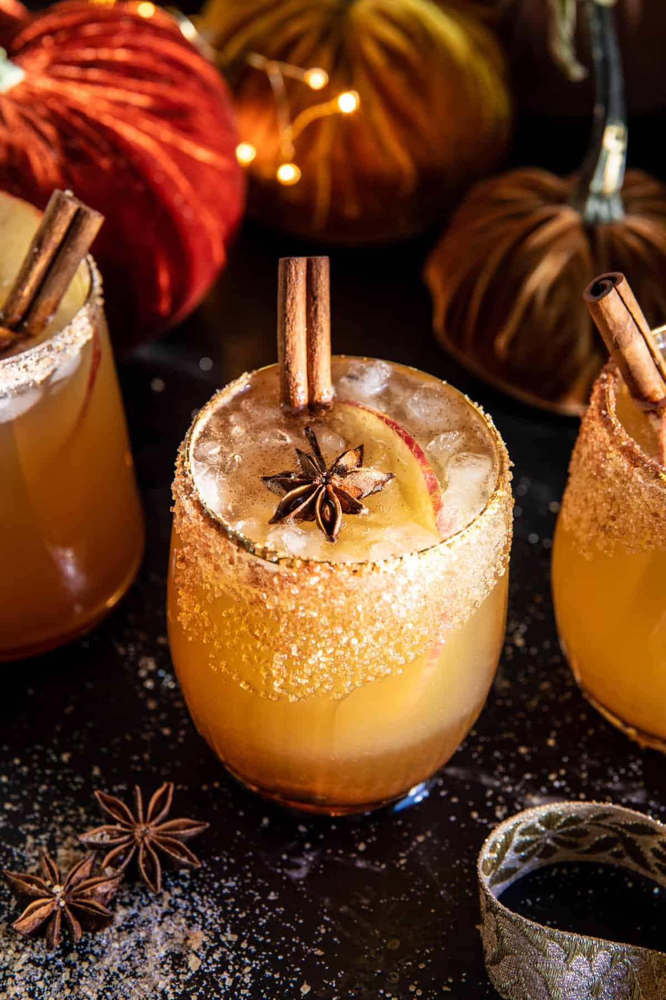

Fall Cider Punch

Fall Cider Punch
Perfect for entertaining in the cooler months, this fall mocktail will be a hit at all your gatherings
Ingredients
- 8 cups apple cider
- 2 TBSP apple cider vinegar
- 1/2 cup apple butter
- 4 cinnamon sticks
- 2 cups sparkling white grape juice
- 2 bottles ginger beer
- 2 apples, sliced
- 2 TBSP coarse sugar
- 3 TBSP brown sugar
- 3/4 tsp cinnamon
- Pomegranate or orange juice, for the rim
- Star anise, for garnish
Steps
- In a largepitcher, combine the cider, vinegar, and apple butter. Stir until combined. Add the cinnamon sticks and 1-2 star anise (if you'd like).
Chill until ready to serve
- Just before serving, add ice to your punch bowl. Pour over the grape juice and ginger beer. Add ice to cocktail glasses and pour over the punch. Serve
with apple slices.
- To make the cinnamon rim, on a small plate, mix the coarse sugar, brown sugar, and cinnamon. Dip the rim of the glass into a thin layer of juice.
Then dip the glass into the sugar mix.